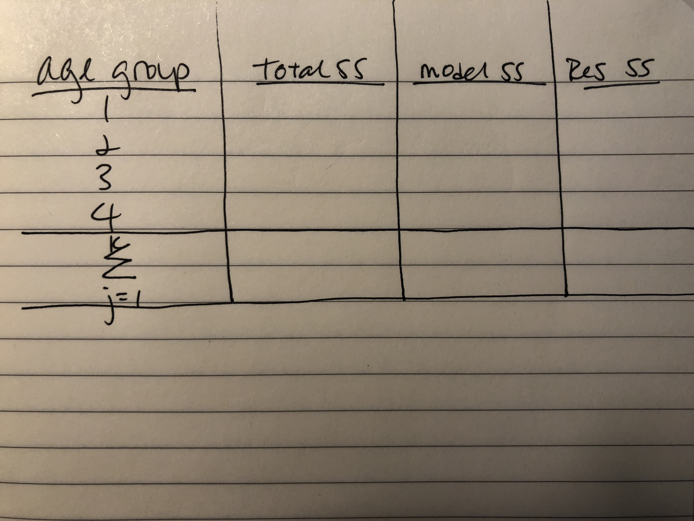

CONJ620: CM 4.3
ANOVA
Alison Presmanes Hill
Logistics
- A complete knitted
htmlfile is due on Sakai by Thursday September 6 (2:30pm). - This lab is based on the assigned reading that includes this article on ANOVA in Nature Points of Significance.
- Also, this blog post is very well-written and helpful.
Overview
So far we have learned that when we want to compare means we can use a two-sample \(t\)-test or a two-sample permutation test. These tests have limitations though:
- You can compare only 2 means: often we would like to compare means from 3 or more groups.
- It can be used only with one Predictor/Independent Variable.
Enter ANOVA:
- Compares several means.
- Can be used when you have manipulated more than one Independent Variables.
- It is an extension of regression (the General Linear Model)
From Nature Points of Significance:
"The ANOVA null hypothesis is that all samples are from the same distribution and have equal means. Under this null, between-group variation of sample means and within-group variation of sample values are predictably related. Their ratio can be used as a test statistic, F, which will be larger than expected in the presence of treatment effects. Although it appears that we are testing equality of variances, we are actually testing whether all the treatment effects are zero."
In fact, we are actually testing whether the variability between the sample means (i.e., based on groups) is "extreme" or "surprising", given the random variation present within the samples (i.e., the groups). This blog post explains this very well!
Packages
library(tidyverse)
library(janitor)
library(moderndive)
library(broom)Get the data
"A univariate [read: one response/outcome variable] ANOVA was conducted investigating the impact of the between-subjects factors [read: all levels of factors are measured from independent samples] of age (4: 3–4 years, 5–6 years, 7–8 years, 9–11 years), number of resources (2: 12 or 30 stickers), number of recipients (2: 1 or 2 anonymous recipients), and gender (2: female, male) on the proportion of resources shared."
# create variable to store url
link <- "https://dataverse.harvard.edu/api/access/datafile/2712105"
# read in column names only
sticker_names <- link %>%
read_tsv(n_max = 0) %>% # default: col_names = TRUE
rename(stickersgiven = 'absolutenumberofstickersgiven(Conditions1or3:Outof12;Conditions2or4:Outof30)') %>%
names()
# read in data, set column names
stickers <- link %>%
read_tsv(skip = 2, col_names = sticker_names) %>%
clean_names()
# clean it up a bit
# in class we got errors, so we commented out two lines
stickers_clean <- stickers %>%
mutate(num_stickers = case_when(
number_stickers == 1 ~ 12,
number_stickers == 2 ~ 30)) %>%
filter(!(subject_number == 263)) %>%
#mutate(condition = if_else(subject_number == 263, 3L, condition)) %>%
#mutate(num_stickers = if_else(subject_number == 263, 30L, num_stickers)) %>%
mutate(prop_given = round(stickersgiven / num_stickers, 2)) %>%
select(-percent_given_outof100percent, -number_stickers) %>%
mutate(giveornot = case_when(
prop_given == 0 ~ 0,
prop_given > 0 ~ 1)) Do an ANOVA by hand
You may use R as a calculator to get you through this section, but you may also choose to do this by hand or in Excel, or using whatever tool you feel comfortable with. We'll focus on doing a one-way univariate ANOVA by hand.
- One-way means there is only one independent or predictor variable. We'll use age group as the predictor.
- Univariate means we are predicting a single response or outcome variable: the proportion of stickers given (
prop_given).
Use the following code to create a mini version of the stickers_clean data with only 5 observations in each age group to create a balanced design, and decrease the math!
set.seed(1990)
givers <- stickers_clean %>%
filter(giveornot == 1) %>%
mutate(age_groups = as.factor(agegroups))
mini_givers <- givers %>%
group_by(age_groups) %>%
sample_n(5) %>%
select(subject_number, prop_given, age_groups) %>%
ungroup()I'll lay the data out in a table you can view with rows as observations and a column for each of the k age groups:
Note! Do not copy/paste this data from the table into Excel- folks who did this in class had very bizarre values imported into Excel in this way. If you want to access this table for excel, you can export a .csv using write_csv(mini_givers, here::here("mygivers.csv")).
Lay out an ANOVA source table on paper, fill it in, take a picture with your phone, and include the image in your knit file.

Here are the main formulas you need:
| Source of Variation | Sums of Squares | df | Mean Square | F | |
|---|---|---|---|---|---|
| \(SS_{total}\) | Total | \(\sum_{j = 1}^k\sum_{i = 1}^n(y_{ij}-\bar{y_{\bullet\bullet}})^2\) | \(kn-1\) | \(\frac{SS_{total}}{kn-1}\) | |
| \(SS_{model}\) | Model | \(n\sum_{j = 1}^k(\bar{y_{\bullet{j}}}-\bar{y_{\bullet\bullet}})^2\) | \(k-1\) | \(\frac{SS_{model}}{k-1}\) | \(\frac{MS_{model}}{MS_{residual}}\) |
| \(SS_{residual}\) | Residual | \(\sum_{j = 1}^k\sum_{i = 1}^n(y_{ij}-\bar{y_{\bullet{j}}})^2\) | \(k(n-1)\) | \(\frac{SS_{residual}}{k(n-1)}\) |
where k is the number of groups and n is the sample size per group in a balanced design.
Don't forget to calculate the F-statistic, and use R functions to find the p-value for that F-statistic (don't try to do that one by hand!).
Do a linear regression in R
Use givers to do a linear regression predicting prop_given from age_groups.
Look at the output here, and interpret the results of the linear regression in light of these means/treatment effects:
(means <- givers %>%
group_by(age_groups) %>%
summarise(cell_means = mean(prop_given)) %>%
mutate(tx_effects = cell_means - cell_means[1]))# A tibble: 4 x 3
age_groups cell_means tx_effects
<fct> <dbl> <dbl>
1 1 0.400 0
2 2 0.425 0.0249
3 3 0.512 0.112
4 4 0.572 0.172 Do an ANOVA in R
Now instead, use the anova function on the model object you created with lm. Interpret the output compared to the linear regression output and cell means/treatment effects output from the above section.
anova(sticker_lm)Note: aov versus anova in R
?aov:
"aov is designed for balanced designs, and the results can be hard to interpret without balance: beware that missing values in the response(s) will likely lose the balance."
- Use
anova(lm())if you don’t have a balanced design
But really, only use anova(lm()) if you:
- Have an unbalanced design (but not horribly so-generally bad idea)
- Are certain you wish to assume equal variances across groups
- Only have one predictor (i.e., one-way ANOVA)
- Foreshadowing: types of sums of squares
What are the ANOVA assumptions:
- The k samples are randomly selected from the k populations of interest
- Each of the k populations have a normal distribution
- All k populations have the same variance
Why does this matter?
- Our observed F-statistic is based on the assumption that when \(H_0\) is true, our F-statistic will have an F-distribution
We assume:
- Which group an observation falls into is fixed, not random
- Residuals are all independent
- Residuals are normally distributed
- Residuals have constant variance